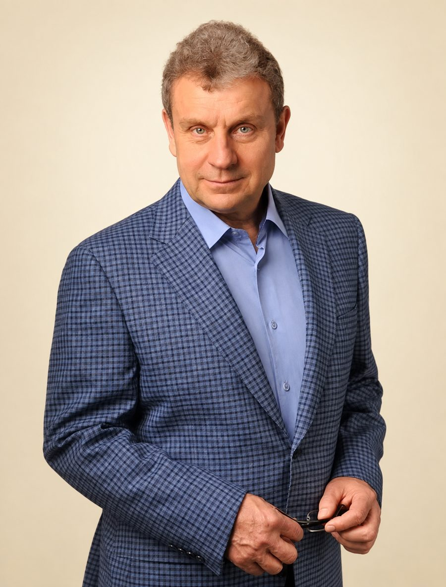
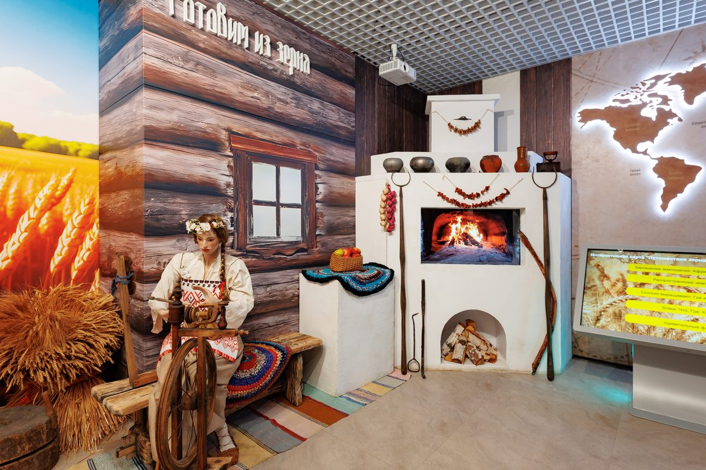
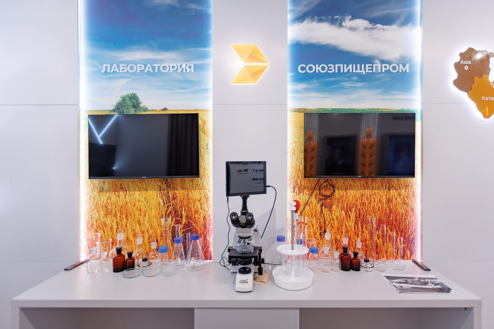
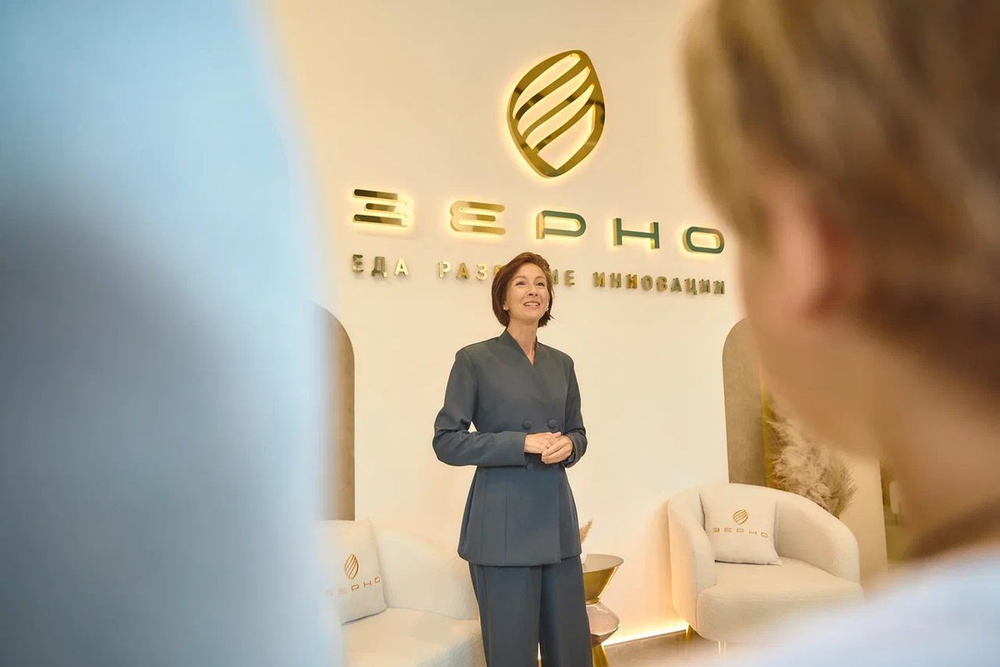

Музей
Каждый зал — путешествие сквозь время: от настоящего к прошлому и будущему

Зерно для нас — часть культуры и долголетия
Я горжусь тем, что «Союзпищепром» знают как производителя безопасной и экологически чистой еды. Музей зерна — продолжение этой работы: здесь видно, что стоит за привычными всем продуктами — земля, труд и несколько тысяч лет истории. Зерно для нас — часть культуры. Когда понимаешь, как всё устроено, выбираешь осознанно.
Александр Берестов
Президент ООО «Объединение «Союзпищепром»
Как всё началось
История зерна начинается с неолита. Здесь собраны вещи, которых больше нет в обиходе: мешки с клеймами уральских мукомолов, купеческая лавка, портреты людей, кормивших город сто лет назад.


Зерно сегодня
Пока вы читаете это, зерно с соседних полей едет на элеватор. Вы посмотрите на него в микроскоп, найдёте свой район на светящейся карте области и увидите, как элеватор устроен внутри.
С гидом интереснее
Экспозицию можно обойти и самому, но с гидом интереснее: он рассказывает не по табличкам, а по памяти, отвечает на вопросы по дороге и знает, у какой витрины стоит задержаться. Ходим небольшими группами.

Приходите, чтобы увидеть историю зерна своими глазами
А после экскурсии вы сможете попробовать дегустационный сет «Зерно»: уральская сытная преснушка — пирожок с секретной начинкой от шефа, кашу на фундучном молоке с местными ягодами и чай по авторскому рецепту.